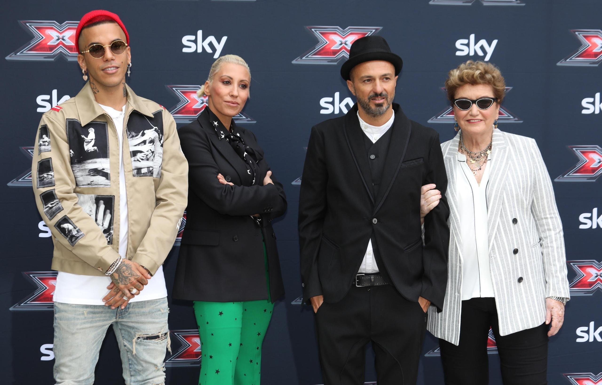

歌手Delia在五一劳动节音乐会上篡改了游击队歌曲《Bella Ciao》的歌词,这是近期最引人注目的例子之一,说明某类创作歌手如何在毫无敬意的情况下,占用并利用政治价值观与理想。
那些在2000年代论坛巨魔文化里长大的trapper,讲述着自己从不涉足的街区、根本不存在的帮派、从未见过的金钱,白白吓坏了婴儿潮一代。他们从嘻哈那里只学到了autotune和外在美学,只剩下对品牌的痴迷:社会冲突、政治愤怒、真实的街头、文化的饥饿感,统统消失了。
而意大利本土独立音乐,则像是一代人的情感日记,他们怀念着自己从未经历过的时代:温吞的感情、人造的忧郁、被包装成深度的乡愁式伤感。没有风险,没有视野,没有真正的伤口。
电子乐的"知识分子们"弹出两段侧链压缩下的琶音,闭上眼睛,把头倾斜15度,在把无聊误认为内省的观众面前,模拟出一种精神超脱感。

X-Factor评委团,被设定为讨好所有人、评判别人的音乐。
音乐评论已经死了。文化媒体也一样。但最重要的是,那些真正能够谈论艺术、政治与文化,而不把每一次对话都变成随意发表意见、社交媒体口号或伪装成真实性的功能性文盲的人,已经消失了。没有人再深入探讨任何事情:大家只是反应、站队、酸言酸语、下定论。所有人一遇到批评就会生气,甚至都没弄懂批评的内容。
"当一个国家失去批判性梳理自身文化的能力时,艺术进步的机制本身就会崩溃。"
而当一个国家失去批判性梳理自身文化的能力时,艺术进步的机制本身就会崩溃。因为艺术是在冲突、辩论、探索、犀利的批评与远见中成长的,而不是在对任何能带来互动量的东西的持续认可中成长的。

Ferragnez一家,清楚地展现了将意大利新式传统家庭刻板原型化的尝试。
与此同时,创造力全面衰退的各大唱片公司,把荒唐的合约签给那些毫无体系、也毫无职业或政治意识的艺人,这些艺人在Instagram上庆祝自己的签约,活像被领主邀请上桌的中世纪农奴。
于是意大利被无关紧要的音乐淹没:那些歌曲的作者,在真正有话要说之前,就已经一心想要成名。
真正的悲剧在于,新一代人正在没有任何替代选择的环境中成长。没有反叛者,没有导师,没有真正的亚文化。只有人设、互动量和成功的模拟。
«只有人设、互动量和成功的模拟。»
Tony Effe在2025年圣雷莫音乐节——越来越多说唱歌手把这个意大利商业音乐节当作一个目标。